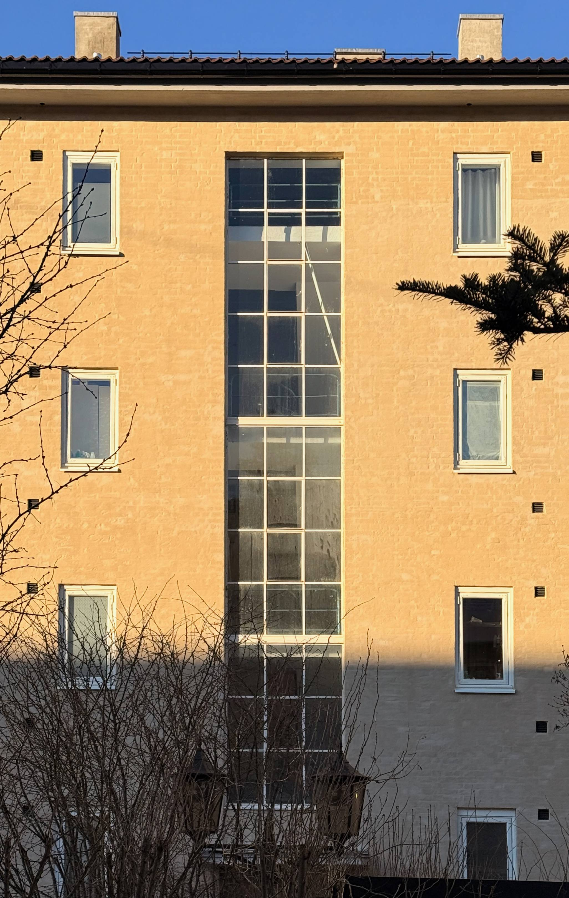
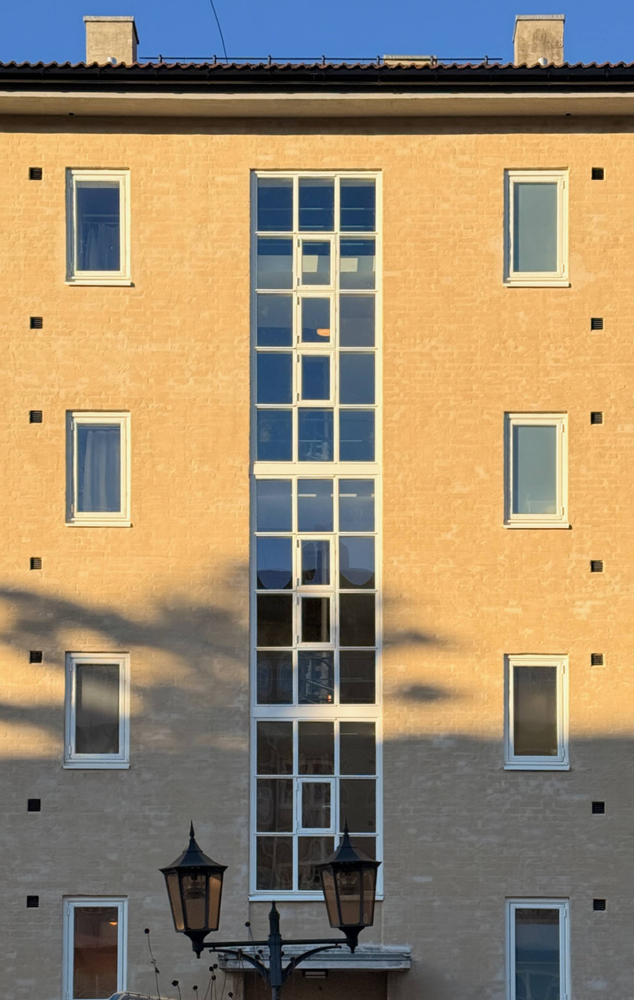
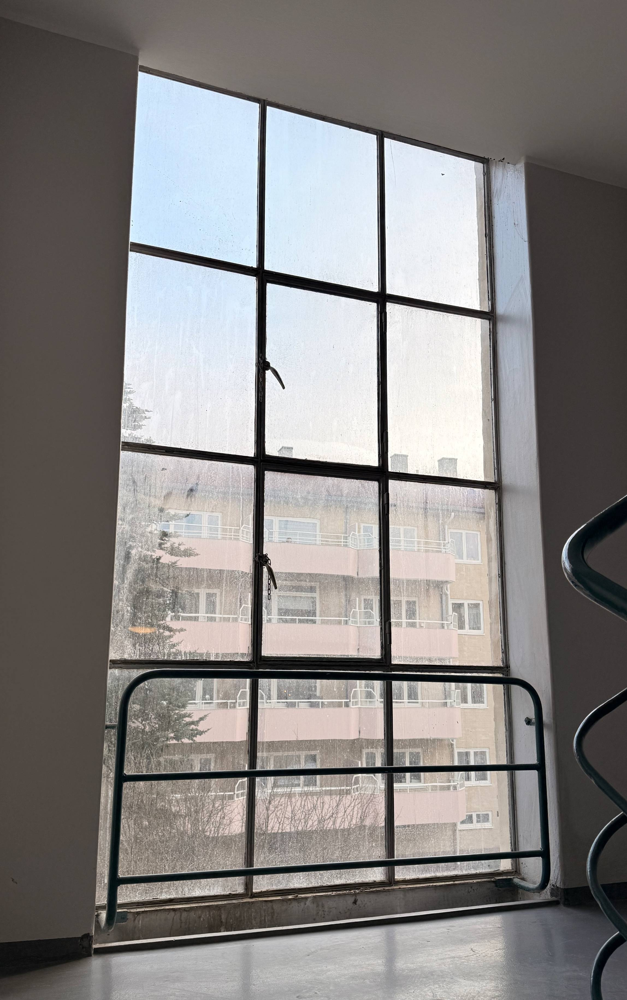
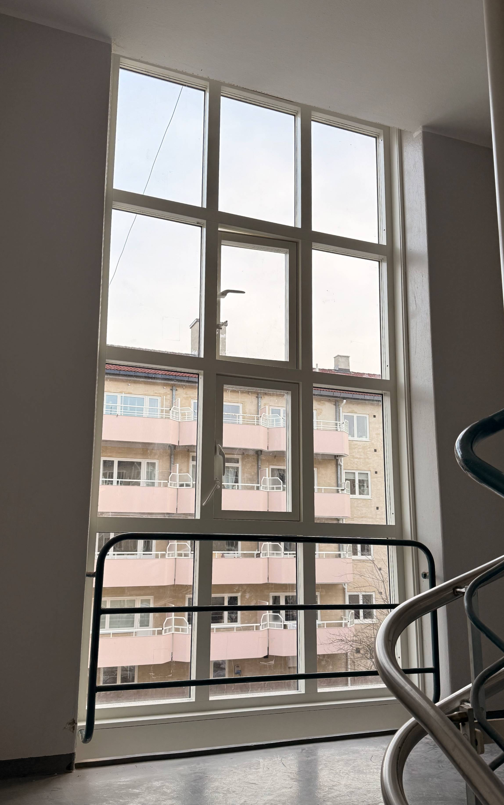
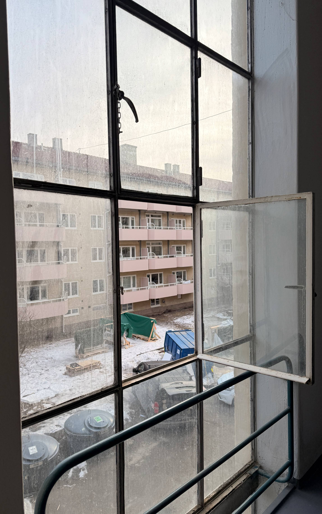
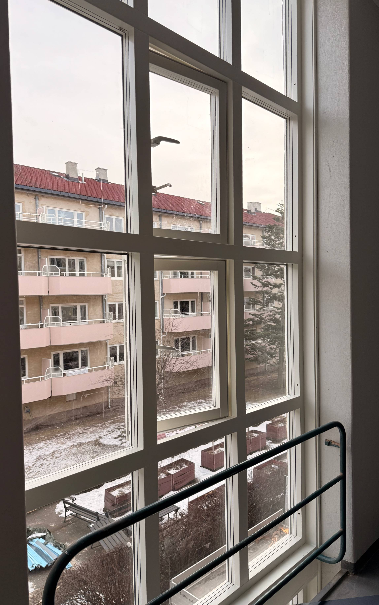

Sammenligning av oppgangsvinduer
Tøyen 2 Borettslag


NB: For å sikre best mulig sammenligning er bildene justert til samme vinkel hvor bygningsmassen er brukt som mal. Bildene er ellers uredigerte og viser den faktiske tilstanden. Fotografert av Thuy Gia Nguyen 10.02.2025 kl 10:20


Sammenligning 2 - Innvendig bilde tatt i Monrads gate 21C og Monradsgate 21D. Fotografert av Thuy Gia Nguyen 17.02.2025 kl 11:17


Sammenligning 3 - Innvendig bilde tatt i Monrads gate 21C og Monradsgate 21D. Fotografert av Thuy Gia Nguyen 17.02.2025 kl 11:24